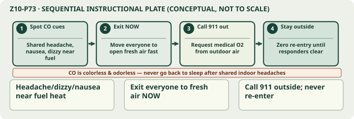

Z10-P73 · Wilderness medicine · New manuscript
Act immediately on carbon monoxide poisoning cues with fresh air and 911
Recognize silent multi-person CO symptoms indoors, in vehicles, or in tents and evacuate to clean outdoor air immediately.
When it applies · Any fuel-burning heater, stove, generator, fireplace, or idling vehicle near people in cabins, campers, shelters, or snow-drifted cars.
Equipment · Immediate outdoor exit route, working CO alarm (prevention/alert only), and 911 access from outside.

Actions
- Suspect carbon monoxide immediately when one or more people in an enclosed or sheltered space develop sudden headache, dizziness, nausea, vomiting, confusion, weakness, or unexplained drowsiness—especially when multiple companions feel "flu-like" at the same time.[C07, C16]
- Move EVERY person immediately into clean open outdoor air without stopping to pack gear, keep bystanders out of the contaminated space, and call 911 from outside—remember CO is colorless, odorless, and requires clinical high-flow oxygen evaluation.[C07, C05, T02]
- Never re-enter a shelter, cabin, or vehicle to retrieve items or silence an alarm before fire/EMS crews meter the air and clear the space; initiate dispatcher-guided CPR outdoors if anyone is unresponsive and not breathing normally.[C07, M03]
Failure recognition · Attributing shared tent or cabin headaches and nausea to "bad camp dinner" and going back to sleep while a heater continues running.[C07, C16]
Verify · Confirm all occupants are accounted for in fresh outdoor air, 911 is dispatched, and zero people re-enter until cleared by responders.[C07, T02]
Stop or change course · Any CO alarm, shared headache/nausea near fuel appliances, or collapse near an engine/heater mandates instant outdoor evacuation and 911 care.[C07, C09, T02]
Evidence and editorial notes
- C05 · CPSC · Portable Heaters and Camping Equipment (current web edition)
- Section: Carbon monoxide poisoning from portable camping equipment · Conditions: Tents, campers, vehicles and other enclosed spaces
Support: Fuel-burning camping equipment can lead to fatal carbon monoxide buildup in enclosed spaces.
Limitations: High altitude increases incomplete combustion and CO production. · Conflicting evidence: None; aligns with CDC-CO and NPS guidance.
Editorial note: Hard-stop prohibition against indoor/vestibule/tent combustion. · Specialist reviewer: Carbon monoxide safety and emergency medicine
Primary source · checked 2026-11-24 - C07 · CPSC · Carbon Monoxide Fact Sheet (current web edition)
- Section: CO poisoning symptoms; what to do if suspected · Conditions: Suspected carbon monoxide exposure
Support: Escape to fresh air immediately and contact emergency services. Symptoms can include headache, dizziness, nausea and confusion.
Limitations: CO is colorless and odorless; symptoms mimic viral illness or altitude fatigue and can incapacitate sleepers without waking. · Conflicting evidence: None; aligns with CDC-CO.
Editorial note: Standard CO emergency stop condition across Z02 and Z03. · Specialist reviewer: Carbon monoxide safety and emergency medicine
Primary source · checked 2026-11-24 - C09 · CPSC · CO Alarms (current web edition)
- Section: Installing and maintaining CO alarms · Conditions: U.S. household CO prevention
Support: Install CO alarms on every level and outside sleeping areas. Follow placement and maintenance instructions.
Limitations: Alarms alert to buildup after release begins; they never make indoor fuel-burning appliances safe. · Conflicting evidence: None; complements C05 and C06.
Editorial note: Paired with exit-plan checks in household and shelter cards. · Specialist reviewer: Carbon monoxide safety
Primary source · checked 2026-11-24 - C16 · CDC · Carbon Monoxide Poisoning Basics (current web edition)
- Section: Carbon Monoxide Poisoning Basics > Sources and Prevention · Conditions: Any enclosed or semi-enclosed structure, garage, porch, tent, or vehicle
Support: Never burn charcoal, operate camp stoves, or run fuel-burning heaters inside homes, garages, tents, or vehicles even with doors or windows partly open.
Limitations: Vent cracks and open garage doors do not prevent lethal CO accumulation. · Conflicting evidence: Refutes dangerous myth that cracking a tent vent or garage door makes indoor combustion safe.
Editorial note: Hard-stop rule across all Z02 ventilation and Z03 combustion cards. · Specialist reviewer: Carbon monoxide safety and emergency medicine
Primary source · checked 2026-11-24 - M03 · American Heart Association · 2025 Adult Basic Life Support (2025)
- Section: Figure 2 Adult Basic Life Support Algorithm for Lay Rescuers; 6.1 Recognition of Cardiac Arrest · Conditions: Unresponsive adult with absent or abnormal breathing; early dispatch and AED access
Support: Recognize gasps as abnormal, activate EMS, start CPR and use an AED promptly. Follow prompts and resume after analysis or shock.
Limitations: Pediatric and drowning arrest require their own training or dispatch prompts; the adult cardiac-arrest algorithm is not all-age guidance. · Conflicting evidence: See A02 claim audit for boundaries.
Editorial note: Distinguishes lay activation and dispatcher-guided CPR from advanced life support. · Specialist reviewer: EMS and resuscitation specialist
Primary source · checked 2026-11-25 - T02 · American Red Cross · First Aid Steps (current web edition)
- Section: First Aid Steps > Call 9-1-1 · Conditions: Lay emergency response to unresponsiveness, abnormal breathing or severe bleeding
Support: Activate EMS and get needed equipment. Follow dispatcher directions and act within training.
Limitations: Remote locations may delay EMS arrival, requiring sustained stabilization after activation. · Conflicting evidence: None; aligns with NPS-E.
Editorial note: Mandates early emergency activation and dispatcher adherence. · Specialist reviewer: EMS and wilderness medicine
Primary source · checked 2026-11-24
Source lineage · CPSC Carbon Monoxide Fact Sheet and CDC CO Basics; new manuscript · Classification · New manuscript.